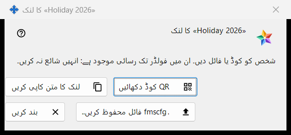
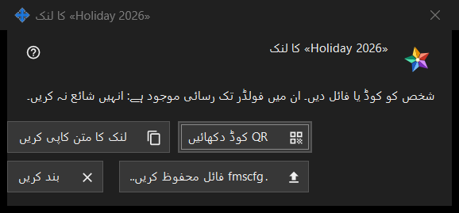

فولڈر کے لیے لنک
یہ کس مقصد کے لیے ہے
ایک شائع شدہ فولڈر کو ایسے شخص تک پہنچاتا ہے جس کا ایکسچینج سرور پر کوئی اکاؤنٹ نہیں: QR کوڈ، لنک کے متن اور .fmscfg فائل کی صورت میں۔ یہ ونڈو ایکسچینج اکاؤنٹ میں میرے مشترکہ فولڈرز گروپ میں لنک بنائیں.. یا نیا لنک.. دبانے کے بعد کھلتی ہے، نیز کسی فولڈر کی ونڈو باہر رسائی دیں.. میں QR / کوڈ دکھائیں.. سے بھی۔ موجودہ پروگرام میں یہ دونوں کمانڈز بند ہیں، کیونکہ اکاؤنٹ سے باہر کے لوگوں کے لیے رسائی پیش نہیں کی جاتی؛ یہ صفحہ بتاتا ہے کہ لنک موجود ہونے پر ونڈو کیا دکھاتی ہے۔


اس ترتیب میں
- کوئی شائع شدہ فولڈر منتخب کریں اور لنک بنائیں.. دبائیں (پرانے لنک کو بدلنے کے لیے نیا لنک.. دبائیں)۔
- ونڈو کے اوپر موجود نوٹ پڑھیں۔
- لنک کو ان بٹنوں میں سے کسی ایک سے دیں: لنک کا متن کاپی کریں، .fmscfg فائل محفوظ کریں.. یا QR کوڈ دکھائیں۔
- بند کریں دبائیں۔
عناصر
ونڈو کب دستیاب ہوتی ہے
ونڈو صرف اس لنک کے لیے ہوتی ہے جو ابھی بنایا گیا ہو یا پہلے سے موجود ہو۔ جب تک اکاؤنٹ سے باہر کے لوگوں کے لیے رسائی پیش نہیں کی جاتی، لنک بنائیں.. اور نیا لنک.. بند رہتے ہیں، ان کے نیچے کا نوٹ وجہ بتاتا ہے اور ونڈو نہیں کھلتی؛ QR / کوڈ دکھائیں.. بھی بند ہے۔ لنک حذف کریں دستیاب رہتا ہے۔
اوپر کا نوٹ
نوٹ کہتا ہے: شخص کو کوڈ یا فائل دیں۔ ان میں فولڈر تک رسائی موجود ہے: انہیں شائع نہ کریں۔ جس کے پاس QR کوڈ، لنک کا متن یا فائل ہو، وہ اس فولڈر کو کھول سکتا ہے۔ لنک کا متن اسکرین پر کبھی نہیں دکھایا جاتا۔
QR کوڈ دکھائیں
QR کی تصویر کو بڑا کرنے والی ونڈو میں کھولتا ہے۔ بٹن صرف تب ہوتا ہے جب QR کوڈ بن سکا ہو؛ اگر لنک کا متن QR کوڈ کے لیے بہت بڑا ہو تو جواب آتا ہے: کوڈ QR کوڈ کے لیے بہت بڑا ہے - فائل استعمال کریں۔
لنک کا متن کاپی کریں
لنک کا متن (یہ FMSSFTP2: سے شروع ہوتا ہے) ایک محفوظ راستے سے کلپ بورڈ پر رکھتا ہے جو اسے Windows کی کلپ بورڈ ہسٹری اور کلاؤڈ کلپ بورڈ سے باہر رکھتا ہے، اور جواب دیتا ہے: لنک کا متن کاپی ہو گیا۔ بٹن صرف تب ہوتا ہے جب لنک کا متن موجود ہو۔
.fmscfg فائل محفوظ کریں..
صرف اسی ایک فولڈر کے لیے ترتیبات کی فائل محفوظ کرتا ہے، جسے صرف اس کا مالک پڑھ سکتا ہے۔ ونڈو یا تو راستے کے ساتھ فائل محفوظ ہو گئی: بتاتی ہے، یا فائل محفوظ نہیں ہو سکی۔ بٹن صرف تب ہوتا ہے جب فائل بن سکی ہو۔
نیا لنک اور لنک حذف کریں
دونوں اس ونڈو کے نہیں بلکہ گروپ کے ہیں، اور دونوں پہلے پوچھتے ہیں (ڈیفالٹ جواب: نہیں): نیا لنک.. خبردار کرتا ہے کہ پہلے کے تمام QR کوڈز اور فائلیں کام کرنا بند کر دیں گی، اور لنک حذف کریں خبردار کرتا ہے کہ اس کے ساتھ دیے گئے تمام QR کوڈز اور فائلیں کام کرنا بند کر دیں گی۔
بند کریں
ونڈو بند کرتا ہے اور اس سے لنک کا متن، فائل کا مواد اور QR کی تصویر ہٹا دیتا ہے۔
مینیجر کی ترتیبات · SFTP اشتراک کی ترتیبات · ایکسچینج سرور کی ترتیبات